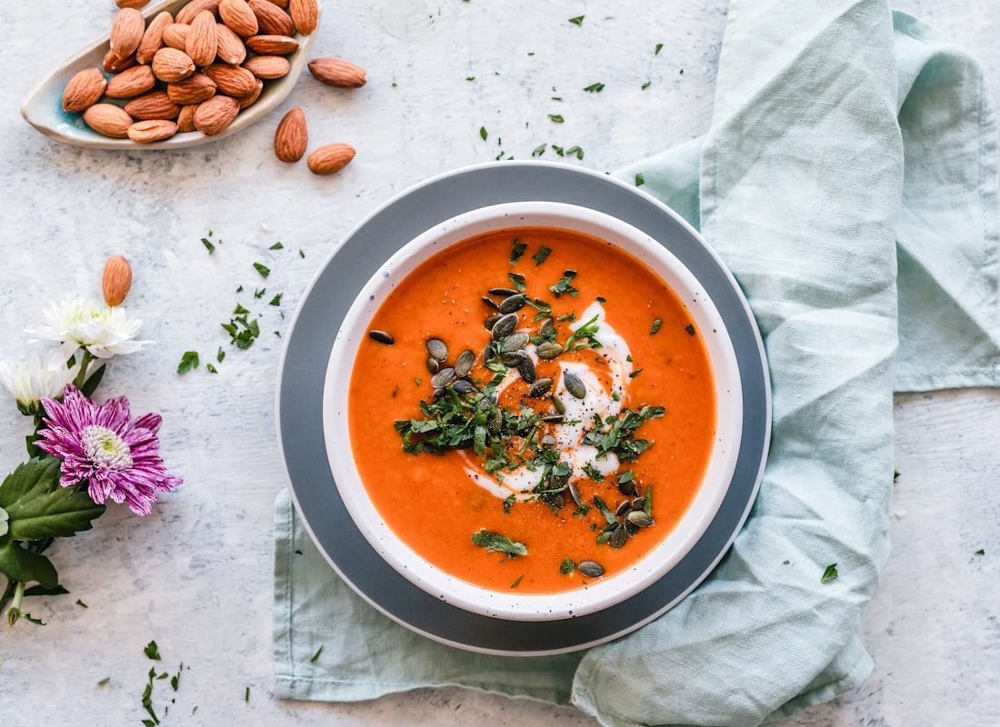

Recipe
Lean turkey + bean chili
Mild, not salty, not sweet. No corn. Better the next day.
8 bowls (eat 6, freeze 2)
15 min hands-on · 35 min simmer
3–4 days fridge · freeze the rest


Swipe for more photos.
Ingredients
- 2 teaspoons olive oil
- 1½ lb extra-lean ground turkey (93–99%)
- 2 yellow onions, diced
- 4 garlic cloves, minced
- 2 bell peppers, diced
- 3 tablespoons mild chili powder (start with 2 if yours is hot)
- 2 teaspoons cumin
- 1 teaspoon dried oregano
- ¼ teaspoon black pepper
- 1 (28 oz) can no-salt-added crushed tomatoes
- 1½ cups low-sodium chicken broth
- 1 (15 oz) can no-salt-added kidney beans, rinsed
- 1 (15 oz) can no-salt-added black beans, rinsed
- 1 (15 oz) can no-salt-added pinto beans, rinsed
- 1 tablespoon tomato paste
- Juice of 1 lime
- Handful cilantro
- Optional: diced avocado when you eat
Steps
- Warm oil in a big pot. Cook onion, garlic, and peppers 6 minutes.
- Add turkey. Break it up until no pink.
- Stir in chili powder, cumin, oregano, pepper, and tomato paste 30 seconds.
- Add tomatoes, broth, and all three beans. Simmer uncovered 30–35 minutes until thick.
- Off heat: lime juice + cilantro. Salt only if it needs it.
- Cool in shallow containers within 2 hours. Freeze Thursday/Friday portions Sunday night.
Why it fits the week
Beans for soluble fiber. Extra-lean turkey keeps sat fat down.